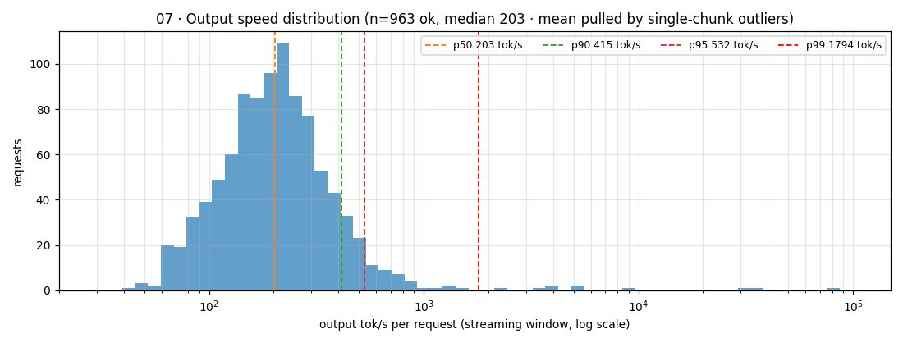
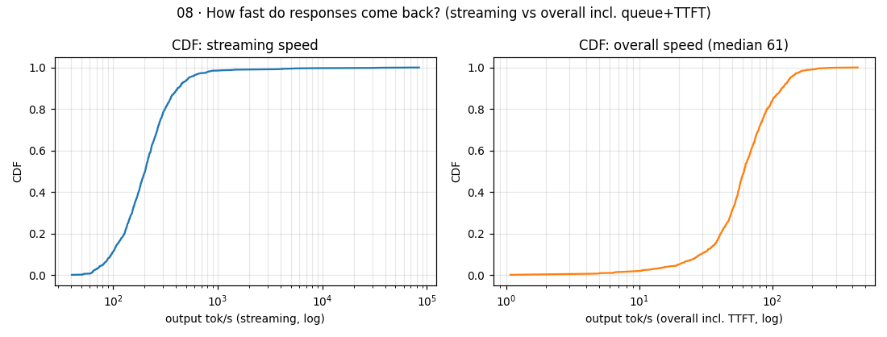
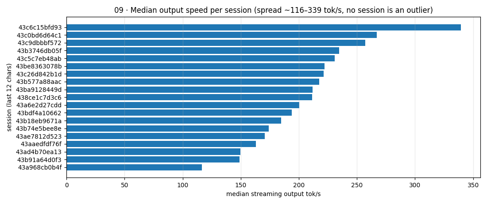
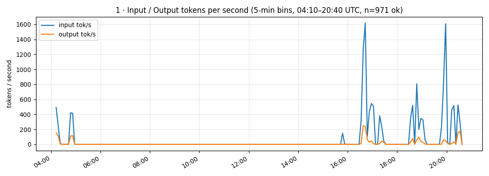
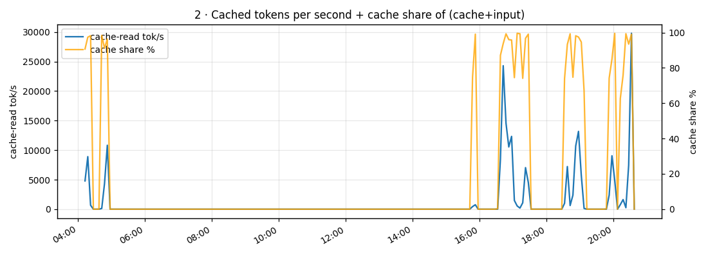
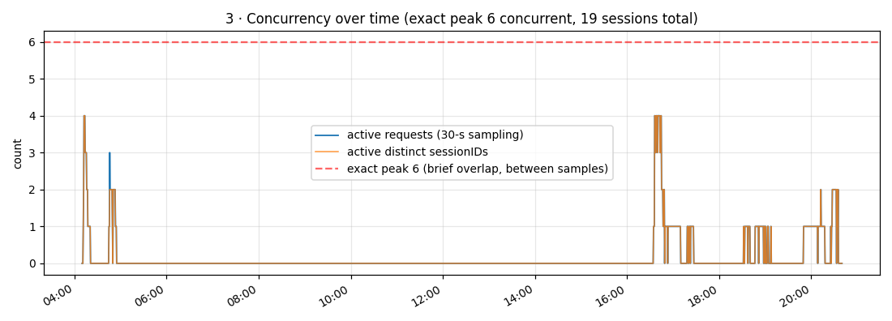
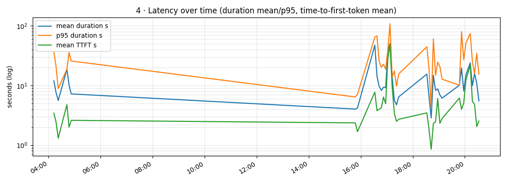
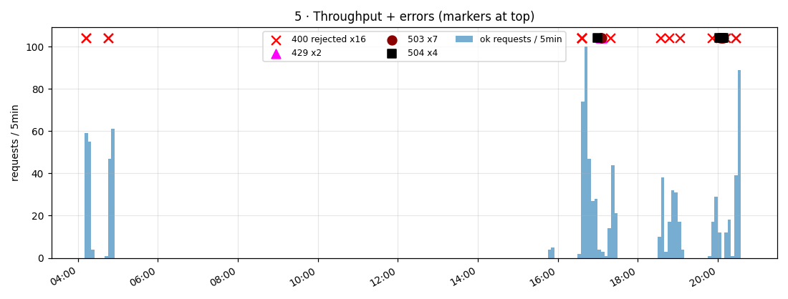
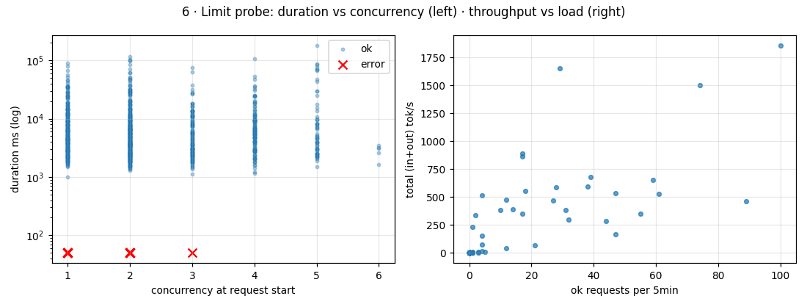

opencode-go load graphs — 2026-09-29 request logs
1000 rows (971 succeeded, 16 rejected 400, 13 failed 429/503/504) · 19 sessions · ~16.4 h window (04:10–20:40 UTC).
6
exact peak concurrent requests
1,619
peak input tok/s (5-min bin)
248
peak output tok/s
29,791
peak cache-read tok/s
~99%
cache share while active
2.9%
requests failed/rejected
Output speed distribution (per request)
Streaming speed = outputTokens / (lastToken − firstToken). Overall speed includes queue + TTFT. Median streams at ~203 tok/s; including wait time the median request yields ~61 tok/s. The tail past ~2k tok/s is single-chunk replies (whole answer in one flush), not real streaming.
| p50 | p90 | p95 | p99 |
|---|
| streaming tok/s | 203 | 415 | 532 | 1794 |
| overall tok/s | 61 | 118 | — | 196 |


Median output speed per session

Over-time graphs (reference)
1 · Input / output tokens per second

2 · Cached tokens over time

3 · Active sessions / concurrency

4 · Latency (duration mean/p95, TTFT)

5 · Throughput + errors

| window (UTC) | what |
|---|
| 16:59–17:06 | 429, 429, 503, 503, 504 — rate-limit + backend errors, concurrency at start was only 1 |
| 20:02–20:08 | 504, 503, 503, 503, 504, 503 — backend timeouts, concurrency at start 1–2 |
| scattered | 16× 400 rejected (client-side), instant (~30 ms), no session id |
6 · Limit probe: does concurrency hurt?

Reading the limits
- Local parallelism was never the bottleneck: peak was 6 concurrent requests; all 429/503/504 errors hit at concurrency 1–2.
- The binding limit is server-side: 429s cluster with 503/504s — classic overload/rate-limit window, plus p95 duration spikes to 60–110 s in those windows.
- 400s are a different animal: instant rejects with no session, spread across the day — client/payload issue, not load.
- Cache does the heavy lifting: ~63.9M cache-read vs 4.3M input tokens; active windows run at 75–99% cache share (~30k cache tok/s peak).
- Headroom for many agents: this log never tests >6 concurrent. Expect the backend (not your box) to set the ceiling; add retry with backoff on 429/503/504, stagger agent starts, and re-run this report at 10/20/50 agents to find the real knee.
01 · 02 · 03 · 04 · 05 · 06